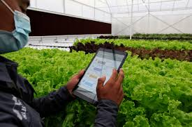

Natural Farming
Organic farming is a production system which avoids or largely excludes the use of synthetically compounded fertilizers, pesticides, growth regulators, genetically modified organisms and livestock food additives. To the maximum extent possible organic farming system rely upon crop rotations, use of crop residues, animal manures, legumes, green manures, off farm organic wastes, biofertilizers, mechanical cultivation, mineral bearing rocks and aspects of biological control to maintain soil productivity and tilth to supply plant nutrients and to control insect, weeds and other pests.
Organic methods can increase farm productivity, repair decades of environmental damage and knit small farm families into more sustainable distribution networks leading to improved food security if they organize themselves in production, certification and marketing. During last few years an increasing number of farmers have shown lack of interest in farming and the people who used to cultivate are migrating to other areas. Organic farming is one way to promote either self-sufficiency or food security. Use of massive inputs of chemical fertilizers and toxic pesticides poisons the land and water heavily. The after-effects of this are severe environmental consequences, including loss of topsoil, decrease in soil fertility, surface and ground water contamination and loss of genetic diversity.
Organic farming which is a holistic production management system that promotes and enhances agro-ecosystem health, including biodiversity, biological cycles, and soil biological activity is hence important. Many studies have shown that organic farming methods can produce even higher yields than conventional methods. Significant difference in soil health indicators such as nitrogen mineralization potential and microbial abundance and diversity, which were higher in the organic farms can also be seen. The increased soil health in organic farms also resulted in considerably lower insect and disease incidence. The emphasis on small-scale integrated farming systems has the potential to revitalize rural areas and their economies.
Advantages of organic farming
- It helps to maintain environment health by reducing the level of pollution.
- It reduces human and animal health hazards by reducing the level of residues in the product.
- It helps in keeping agricultural production at a sustainable level.
- It reduces the cost of agricultural production and also improves the soil health.
- It ensures optimum utilization of natural resources for short-term benefit and helps in conserving them for future generation.
- It not only saves energy for both animal and machine, but also reduces risk of crop failure.
- It improves the soil physical properties such as granulation, good tilth, good aeration, easy root penetration and improves water-holding capacity and reduces erosion.
- It improves the soil’s chemical properties such as supply and retention of soil nutrients, reduces nutrient loss into water bodies and environment and promotes favourable chemical reactions.
Nutrient management in organic farming
In organic farming, it is important to constantly work to build a healthy soil that is rich in organic matter and has all the nutrients that the plants need. Several methods viz. green manuring, addition of manures and biofertilizers etc can be used to build up soil fertility. These organic sources not only add different nutrients to the soil but also help to prevent weeds and increase soil organic matter to feed soil microorganisms. Soil with high organic matter resists soil erosion, holds water better and thus requires less irrigation. Some natural minerals that are needed by the plants to grow and to improve the soil’s consistency can also be added. Soil amendments like lime are added to adjust the soil’s pH balance. However soil amendment and water should contain minimum heavy metals. Most of the organic fertilizers used are recycled by-products from other industries that would otherwise go to waste. Farmers also make compost from animal manures and mushroom compost. Before compost can be applied to the fields, it is heated and aged for at least two months, reaching and maintaining an internal temperature of 130°-140°F to kill unwanted bacteria and weed seeds. A number of organic fertilizers / amendments and bacterial and fungal biofertilizers can be used in organic farming depending upon availability and their suitability to crop. Different available organic inputs are described below:
Organic manures
Commonly available and applied farm yard manure (FYM) and vermicompost etc. are generally low in nutrient content, so high application rates are needed to meet crop nutrient requirements. However, in many developing countries including India, the availability of organic manures is not sufficient for crop requirements; partly due to its extensive use of cattle dung in energy production. Green manuring with Sesbania, cowpea, green gram etc are quiet effective to improve the organic matter content of soil. However, use of green manuring has declined in last few decades due to intensive cropping and socioeconomic reasons. Considering these constraints International Federation of Organic Agriculture Movement (IFOAM) and Codex Alimentarius have approved the use of some inorganic sources of plant nutrients like rock phosphate, basic slag, rock potash etc. in organic farming systems. These substances can supply essential nutrients and may be from plant, animal, microbial or mineral origin and may undergo physical, enzymatic or microbial processes and their use does not result in unacceptable effects on produce and the environment including soil organisms.
Bacterial and fungal biofertilizers
Contribution of biological fixation of nitrogen on surface of earth is the highest (67.3%) among all the sources of N fixation. Following bacterial and fungal biofertilizers can be used as a component of organic farming in different crops.
Rhizobium : The effectiveness of symbiotic N2 fixing bacteria viz. Rhizobia for legume crops eg. Rhizobium, Bradyrhizobium, Sinorhizobium, Azorhizobium, and Mesorhizobium etc have been well recognized. These bacteria infecting legumes have a global distribution. These rhizobia have a N2-fixing capability up to 450 kg N ha–1 depending on host- plant species and bacterial strains. Carrier based inoculants can be coated on seeds for the introduction of bacterial strains into soil.
Azotobacter: N2 fixing free-living bacteria can fix atmospheric nitrogen in cereal crops without any symbiosis. Such free living bacterias are: Azotobacter sp. for different cereal crops; Acetobacter diazotrophicus and Herbaspirillum spp. for sugarcane, sorghum and maize crop. Beside fixing nitrogen, they also increase germination and vigour in young plants leading to an improved crop stand. They can fix 15-20 kg/ha nitrogen per year. Azotobacter sp. also has ability to produce anti fungal compounds against many plant pathogens. Azotobacter can biologically control the nematode diseases of plants also.
Azospirillum: The genus Azospirillum colonizes in a variety of annual and perennial plants.
Studies indicate that Azospirillum can increase the growth of crops like sunflower, carrot, oak, sugarbeet, tomato, pepper, cotton, wheat and rice. The crop yield can increase from 5-30%. Inoculum of Azotobacter and Azospirillum can be produced and applied as in peat formulation through seed coating. The peat formulation can also be directly utilized in field applications.
Plant growth promoting rhizobacteria : Various bacteria that promote plant growth are collectively called plant growth promoting rhizobacteria (PGPR). PGPR are thought to improve plant growth by colonizing the root system and pre empting the establishment of suppressing deleterious rhizosphere microorganisms on the roots. Large populations of bacteria established in planting material and roots become a partial sink for nutrients in the rhizosphere thus reducing the amount of C and N available to stimulate spores of fungal pathogens or for subsequent colonization of the root. PGPR belong to several genera viz.Actinoplanes, Azotobacter, Bacillus, Pseudomonas, Rhizobium, Bradyrhizobium, Streptomyces, Xanthomonas etc. Bacillus spp. act as biocontrol agent because their endospores are tolerant to heat and desiccation. Seed treatment with B.subtilis is reported to increase yield of carrot by 48%, oats by 33% and groundnut upto 37%.
Phosphorus-solubilizing bacteria (PSB): Phosphorus is the vital nutrient next to nitrogen for plants and microorganisms.
This element is necessary for the nodulation by Rhizobium and even to nitrogen fixers, Azolla and BGA. The phospho microorganism mainly bacteria and fungi make available insoluble phosphorus to the plants. It can increase crop yield up to 200-500 kg/ha and thus 30 to 50 kg Super Phosphate can be saved. Most predominant phosphorus-solubilizing bacteria (PSB) belong to the genera Bacillus and Pseudomonas. At present PSB is most widely used biofertilizer in India. PSB can reduce the P requirement of crop up to 25%.
Mycorrhizal fungi: Root-colonizing mycorrhizal fungi increase tolerance of heavy metal contamination and drought. Mycorrhizal fungi improve soil quality also by having a direct influence on soil aggregation and therefore aeration and water dynamics. An interesting potential of this fungi is its ability to allow plant access to nutrient sources which are generally unavailable to the host plants and thus plants may be able to use insoluble sources of P when inoculated with mycorrhizal fungi but not in the absence of inoculation.
Blue green algae (BGA): BGA are the pioneer colonizers both in hydrosphere and xerosphere. These organisms have been found to synthesize 0.8 x 1011 tonnes of organic matter, constituting about 40 percent of the total organic matter synthesized annually on this planet. BGA constitute the largest, most diverse and widely distributed group of prokaryotic microscopic organisms that perform oxygenic photosynthesis. These are also known as cyanophyceae and cyanobacteria. These are widely distributed in tropics; and are able to withstand extremes of temperature and drought. The significance of the abundance of BGA in Indian rice soils has been well recognized. Multi-location trials conducted under varying agro climatic conditions have indicated that the algal inoculation could save 30 kg N /ha, however, it depends upon the agro ecological conditions. BGA has been reported to reduce the pH of soil and improve upon exchangeable calcium and water holding capacity. The recommended method of application of the algal inoculum is broadcasting on standing water about 3 to 4 days after transplantation. After the application of algal inoculum the field should be kept water logged for about a week’s time. Establishment of the algal inoculum can be observed within a week of inoculation in the form of floating algal mats, more prominently seen in the afternoon.
Azolla: A floating water fern 'Azolla’ hosts nitrogen fixing BGA Anabaena azollae. Azolla contains 3.4% nitrogen (on dry wt. basis) and add organic matter in soil. This biofertilizer is used for rice cultivation. There are six species of Azolla viz. A. caroliniana, A. nilotica, A. mexicana, A.filiculoides, A. microphylla and A. pinnata. Azolla plant has a floating, branched stem, deeply bilobed leaves and true roots which penetrate the body of water .The leaves are arranged alternately on the stem. Each leaf has a dorsal and ventral lobe. The dorsal fleshy lobe is exposed to air and contains chlorophyll. It grows well in ditches and stagnant water. Azolla can be easily grown throughout the year in India if water is not a limiting factor and climatic conditions are favourable for its growth. This fern usually forms a green mat over water. Azolla is readily decomposed to NH4 which is available to the rice plants. Field trial have shown that rice yields increased by 0.5-2t/ha due to Azolla application. In India and China, about 20 and 18% increase in rice yield, respectively has been reported due to Azolla application.
Weed management in organic farming
In organic farming, chemical herbicides cannot be used. So weeding can be done only manually. Different cultural practices like tillage, flooding, mulching can be used to manage the weeds. Besides, biological (pathogen) method can be used to manage the loss due to weeds. When the ground is fallow, a cover crop can be planted to suppress weeds and build soil quality. Weeds growth can also be limited by using drip irrigation whenever possible, which restricts the distribution of water to the plant line.

Insect pest management
In organic farming, the presence of pests (where and when) is anticipated in advance and accordingly the planting schedules and locations are adjusted as much as possible to avoid serious pest problems. The main strategy to combat harmful pests is to build up a population of beneficial insects, whose larvae feed off the eggs of pests. The key to building a population of beneficial insects is to establish borders (host crops) around fields planted with blends of flowering plants that the beneficial insects particularly like. Then periodically beneficial insects are released into the fields, where the host crops serve as their home base and attract more beneficial insects over time. When faced with a pest outbreak that cannot be handled by beneficial insects, the used of natural or other organically approved insecticides like neem pesticides is done. The two most important criteria for allowed organic pesticides are low toxicity to people and other animals and low persistence in the environment. These criteria are determined by the National Organic Standards.
Diseases management in organic farming
Plant diseases are major constraints for reductions in crop yield and quality in organic and low input production systems. Proper fertility management to crops through balanced supply of macro and micronutrients and adoption of crop rotation have shown to improve the resistance of crops to certain diseases. Thus one of the biggest rewards of organic farming is healthy soil that is alive with beneficial organisms. These healthy microbes, fungi and bacteria keep the harmful bacteria and fungi that cause disease in check.

Limitations and implications of Organic farming
There are a few limitations with organic farming such as
Organic manure is not abundantly available and on plant nutrient basis it may be more expensive than chemical fertilizers if organic inputs are purchased.
Production in organic farming declines especially during first few years, so the farmer should be given premium prices for organic produce.
The guidelines for organic production, processing, transportation and certification etc are beyond the understanding of ordinary Indian farmer.
Marketing of organic produce is also not properly streamlined. There are a number of farms in India which have either never been chemically managed / cultivated or have converted back to organic farming because of farmers’ beliefs or purely for reason of economics. These thousands of farmers cultivating million acres of land are not classified as organic though they are. Their produce either sells in the open market along with conventionally grown produce at the same price or sells purely on goodwill and trust as organic through select outlets and regular specialized markets. These farmers may never opt for certification because of the costs involved as well as the extensive documentation that is required by certifiers.
In dry lands, covering over 65% cultivated area in India, application of chemical fertilizers and pesticides is always low. So these areas are at least “relatively organic” or “organic by default” and a portion of these lands can be converted easily to an organic one to provide better yields/returns. India can greatly benefit from the export of organic foods, but needs to seriously devote attention to market intelligence regarding which product to grow, where to sell, distribution channels, competition, marketing access etc. Presently, good awareness exists among farmers, researchers and policy makers about organic production but a lot more need to be done to streamline production, certification and marketing of organic produce. Uttaranchal and some other state governments have already declared their states as “Organic” state and created special Export Zones like Basmati Export Zone. A large area of North eastern states and other states may be developed as commodity based “organic” production areas. With greater political will and investment in research, extension and marketing infrastructure more of this potential could be realized. Therefore to feed the world’s hungry and poor and to ensure present and future food security right policies, increased public and private investments and technologies, knowledge and capacity building, grounded in sound ecosystem management and harmony between organic farming and food security goals are required.